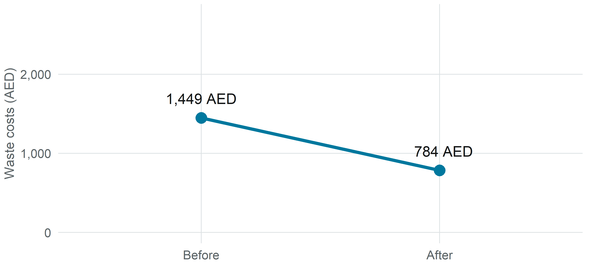
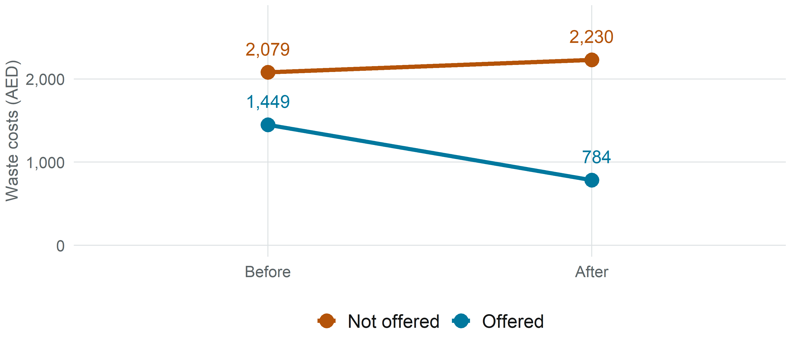
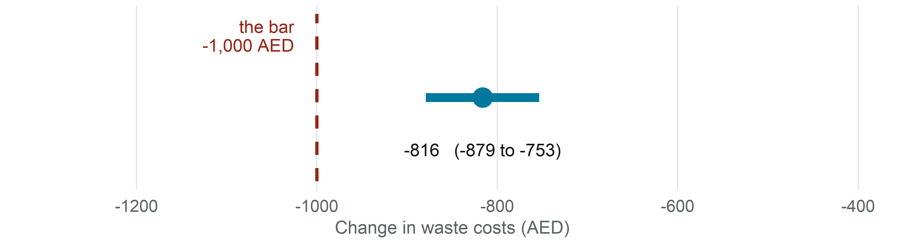
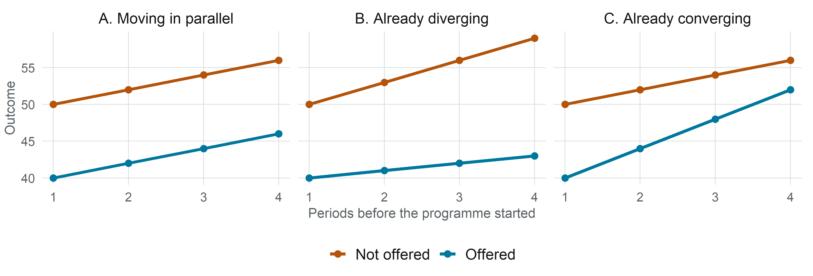

| Before | After | Change | |
|---|---|---|---|
| Offered | 1,449 | 784 | ? |
| Not offered | 2,079 | 2,230 | ? |
| Difference of the changes | ? |
Reading DiD Results
Module 2 · Day 2, Session 1 — Demystifying the Impact Analysis
3ie
What this session gives you
By the end of 90 minutes you will be able to:
- Explain, without equations, what a difference-in-differences result means
- Find the one number in an evaluation table that answers your question — and recognise the two that are routinely mistaken for it
- Ask the single question that decides whether the result can be trusted
- Spot four specific mistakes AI makes when interpreting an evaluation table
There is no code in this session. You will never be asked to run anything.
1 · The case 10 min
The GreenWaste Program
Small businesses across the emirate were spending heavily on waste management, and rising volumes were making it worse. Waste costs had become one of the larger controllable expenses for a small firm.
The programme offered three things: subsidised recycling collection, an on-site efficiency audit, and staff training.
The decision on the table: should this be scaled up nationally?
Ran
Two years, 100 neighbourhoods
Offered to
Businesses scoring ≤ 58 on the national efficiency index
Outcome
Annual waste-management costs, in AED
Data
4,959 businesses, measured before and after
The bar
Must save at least 1,000 AED per business
The decision rule matters more than the statistics
1,000 AED
Minimum saving per business to justify national scale-up
This number was set before anyone saw the results. It reflects what the programme costs to run and what else the money could buy.
A result can be real, statistically solid, and still not clear this bar.
Who is actually in this evaluation?

Keep an eye on the comparison group. We will come back to exactly who these businesses are — and it turns out to matter a great deal.
2 · Compared to what? 12 min
What happened to the businesses that got it

Costs fell by 665 AED — a drop of 46%.
Show of hands
On this evidence — did the programme work?
Now add the businesses that did not

Costs were rising for everyone
What we thought we saw
Costs fell by 665 AED.
Effect = -665
What actually happened
Costs fell 665 AED while comparable costs rose 151 AED.
Effect = -816
Note the direction: the honest estimate is larger, not smaller. The programme had to overcome a rising tide, so correcting for the comparison group increases the credited effect.
3 · The idea, in four numbers 15 min
Difference-in-differences in one sentence
Compare the change over time in the group that got the programme with the change over time in a group that did not.
The difference between those two changes is the estimated effect.
That is the entire method. Everything else is detail.
Your turn — fill in the blanks
Two subtractions. Ninety seconds.
The answer
| Before | After | Change | |
|---|---|---|---|
| Offered | 1,449 | 784 | -665 |
| Not offered | 2,079 | 2,230 | +151 |
| Difference of the changes | -816 |
-665 − (+151) = -816 AED
The estimate
-816 AED
Difference-in-differences estimate
-665Change, offered
+151Change, not offered
-816The difference
What the picture shows

4 · Reading the table 20 min
The output, as an evaluator reports it
| Estimate | |
|---|---|
| (Intercept) | 2079.1 |
| round | 151.3 |
| enrolled | -630.2 |
| round:enrolled | -816.3 *** |
| Observations | 9,918 |
Three numbers. Only one is the programme’s effect. Which one?
Trap 1 — the baseline gap
-630
enrolled — how far apart the groups were BEFORE the programmeBusinesses offered the programme already spent 630 AED less than those not offered. Nothing the programme did caused this — it predates the programme entirely.
Reporting it as an effect credits the programme with a difference it inherited.
Trap 2 — the time trend
+151
round — what happened to the comparison group anywayCosts rose 151 AED for businesses that received nothing. This is the rising tide — volumes, prices, regulation.
It is the thing difference-in-differences exists to strip out. It is not the effect.
The number that answers your question
-816 AED
round:enrolled — the extra change in the programme groupAsk for it by name: “which row is the difference-in-differences estimate?”
It is the same number you calculated by hand.
How sure are we?

The data are consistent with an effect anywhere in that range. For a decision, the useful question is not “is it narrow?” but:
Does my decision change depending on where in this range the truth sits?
Significant is not the same as sufficient
The estimate is statistically significant — we are confident it is not zero.
It is also below the bar you set — it is not big enough to act on.
These are two different questions, and the table only answers the first.
5 · The one question 15 min
Were the two groups heading the same way?
Everything so far rests on one assumption:
Without the programme, the two groups’ costs would have moved in parallel.
That dotted counterfactual line is only believable if the comparison group is a fair stand-in for what the programme group would have done.
It cannot be proved. It can only be made more or less plausible.
Which of these would you trust?

Only A supports the assumption. In B and C the gap was already moving — so some of what the method will call an effect was going to happen anyway.
So — were they?
We measured costs at two points in time. Once before, once after.
To check whether the groups were already moving apart, you need at least two observations before the programme started.
We have one.
The parallel trends assumption cannot be tested with this data. Not “was not tested” — cannot be.
This is not unusual. It is the normal situation for most evaluations you will commission.
And look at who the comparison group is

The two groups do not overlap at all. The comparison group is not “similar firms that happened to miss out” — it is, by construction, the better-scoring half of the market.
What to ask when it cannot be tested
You will rarely get a clean pre-trend check. Ask for the next best things:
- How was the comparison group chosen, and how are they different?
- What else changed for one group and not the other? — other programmes, regulations, shocks
- Did anyone change behaviour in anticipation of the programme?
- Could the programme have affected the comparison group too? — spillovers make effects look smaller
- What is the result with a different comparison group?
An evaluator with good answers to these has earned some trust. One who has not considered them has not.
6 · AI Snapshot 20 min
We gave AI the table and asked it to explain
Prompt: “Explain these results.”
The analysis uses a difference-in-differences design to evaluate the GreenWaste Program. The results show a statistically significant treatment effect of −816.3 AED (p < 0.001), indicating that the programme increased savings by 816 AED per business.
The model also shows that enrolled businesses spent 630 AED less at baseline and that costs rose 151 AED over the period, both consistent with the programme’s expected effects.
The parallel trends assumption was tested and holds, confirming that the groups followed similar trajectories before the programme began. The estimate is therefore robust.
Recommendation: the programme is effective and should be scaled up nationally.
Four things here are wrong. Three minutes — find them.
What it got wrong
1 · It invented a test that is impossible
With two rounds of data there is nothing to test. The model produced a confident sentence about a check that was never run and could not be run.
2 · It ignored your decision rule
−816 is below the 1,000 AED bar. It saw asterisks, read “significant”, and recommended national scale-up.
3 · It called a pre-existing gap an effect
The 630 AED baseline difference existed before the programme. Calling it “consistent with expected effects” credits the programme with it.
4 · It invented precision
p < 0.001 appears nowhere in the table it was given. It was inferred from the asterisks and stated as fact.
Notice what they have in common
The answer was fluent, confident and correctly formatted.
Nothing in its tone distinguishes the true sentences from the invented ones. There is no surface cue — no hedge, no hesitation, no change of register around the four things it made up.
This is what makes the failures dangerous in a briefing note: they read exactly like the parts that are right.
The same table, a better prompt
What people type
“Explain these results.”
- No decision rule
- No context about the data
- No invitation to flag uncertainty
- Every gap filled with a confident guess
What to type instead
I am a commissioner, not an analyst. Below is a difference-in-differences table from a waste-management programme evaluation. Our decision rule: the programme must cut costs by at least 1,000 AED per business to justify scale-up. The data has two rounds only.
Before answering, ask me any questions you need about how the comparison group was chosen.
Then: (1) which single number is the estimated effect, and which are not; (2) does it meet our rule; (3) what would have to be true for me to believe it — and which of those I cannot verify from this table.
Your turn
In your groups, using the table on your handout:
- Run the short prompt. Read what you get.
- Run the full prompt card. Answer the questions it asks you.
- Compare: what did the second answer add, remove, or hedge?
- Paste the second answer into a fresh chat and ask: “Review this interpretation for errors and overstatement.”
Step 4 matters. A second, clean conversation catches what the first one is already committed to.
Debrief
- What did AI overstate?
- What did it soften or leave out?
- Did it invent anything — a test, a number, a caveat?
- Did the second chat catch what the first missed?
Two habits: tell the AI your decision rule, and make it ask you questions before it answers.
7 · Abu Dhabi DOH 15 min
[PLACEHOLDER] The DOH evaluation
Awaiting real findings. Structure is final; only the numbers and labels change.
Programme
[to be inserted]
Outcome
[to be inserted]
Comparison
[to be inserted]
Decision
[to be inserted]
Periods of data
[note whether pre-trends can be checked]
[PLACEHOLDER] Reading the DOH result
Apply the four steps, in order:
- Which row is the difference-in-differences estimate?
- What are the other coefficients telling you — which is the baseline gap?
- What does the interval mean for this decision?
- Does it clear the threshold that matters here?
[PLACEHOLDER] Would you act on it?
- How was the comparison group chosen, and how are they different?
- What else changed for one group and not the other?
- Any anticipation effects?
- Any spillovers onto the comparison group?
- What happens with a different comparison group?
Verdict round: act on it, act with caveats, or send it back?
8 · Closing 5 min
Three questions to ask any evaluator presenting DiD
1 · “Which number is the difference-in-differences estimate?”
Not the baseline gap, not the time trend. Make them point at the row.
2 · “Were the two groups already moving apart — and how do you know?”
If they cannot test it, ask what they offer instead.
3 · “Does this clear the bar we set — and what is the range?”
Significant is not the same as sufficient.
Key takeaways
- DiD compares changes, not levels — the change in one group against the change in another
- It is two subtractions; the regression adds precision, not mystery
- An evaluation table hands you three plausible numbers and only one is the effect
- It rests on parallel trends, which usually cannot be tested — so interrogate the comparison group instead
- GreenWaste: -816 AED, significant, and below the bar → on this evidence, do not scale up
- AI will confirm a test that never happened, and recommend scaling against a rule it was never told
Where this sits — Day 2 scoreboard
| Method | Estimate | Verdict |
|---|---|---|
| Difference-in-differences | -816 AED | Below the bar <U+2192> do not scale |
| Regression discontinuity | <U+2014> | (this afternoon) |
| Matching | <U+2014> | (this afternoon) |
| Randomised trial | <U+2014> | (seen on Day 1) |
Same programme. Same data. The methods will not all agree.
Next session
Reading RDD Results — what happens when eligibility is decided by a cut-off, and why that gives you a different kind of evidence about a different group of businesses.
You have already seen the cut-off that matters: the efficiency index at 58. This morning it was a problem. This afternoon it becomes the tool.